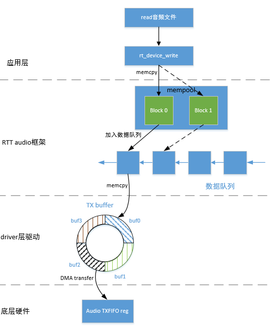
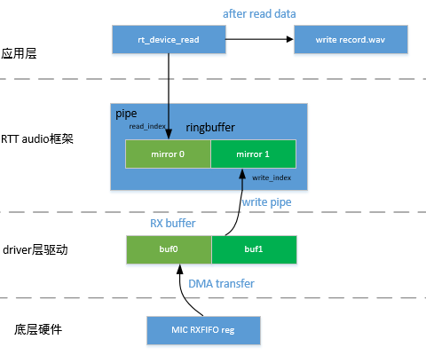

设计说明
源码说明
源代码位于：
-
bsp/artinchip/drv/audio/drv_audio.c: Playback 的 driver 层驱动
-
bsp/artinchip/drv/audio/drv_dmic.c: DMIC 的 driver 层驱动
-
bsp/artinchip/drv/audio/drv_amic.c: AMIC 的 driver 层驱动
-
bsp/artinchip/hal/audio/hal_audio.c: audio 模块的 hal 层驱动
-
bsp/artinchip/include/hal/hal_audio.h: audio 模块的 hal 层头文件
-
bsp/artinchip/include/hal/hal_audio_reg.h: audio 模块的 hal 层头文件，用于寄存器定义
RT-Thread Audio 框架
RT-Thread 定义了一套音频框架，driver 层的驱动就是为了对接音频框架。音频框架在录音端和播放端采用了两种不同的机制，详细说明如下所示：
- 播放端框架
工作流程如下：应用层：
- 应用层从存储设备（如 SD 卡、文件系统等）中读取音频数据。
- 读取到的音频数据被写入到内存池的 block 中。
使用数据队列来管理这些内存池的 block，确保数据的有序传输。
- 从数据队列中依次取出音频数据。
- 将取出的音频数据写入到 audio buffer 中，audio buffer 是一个环形缓冲区。
- 通过 DMA 将 audio buffer 中的音频数据写入到硬件的 TXFIFO 中进行播放。
驱动层：- 确保音频数据的及时写入。
- 利用 DMA 技术将音频数据高效地搬运到硬件的 TXFIFO 中。
 -
录音端框架工作流程如下：应用层：
- 在录音端框架中，虚拟了一个 pipe 设备，这个设备实际上是一个 ringbuffer。
driver 层驱动负责管理一个 RX buffer，RX buffer 也是一个环形缓冲区。
- DMA 负责将麦克风（MIC）接收到的数据搬运到 RX buffer 中。
- DMA 再通过写 pipe 设备将音频数据写入到 pipe 的 ringbuffer 中。
- 应用层代码通过 rt_device_read 每次从 pipe 设备中读取音频数据。
- 读取到的音频数据可以进一步处理并写入到 WAV 文件中。
驱动层：- 管理 RX buffer，确保从麦克风接收到的数据能够及时存入环形缓冲区。
- 利用 DMA 技术高效地将音频数据从硬件搬运到软件层面进行处理。
 - 在录音端框架中，虚拟了一个 pipe 设备，这个设备实际上是一个 ringbuffer。
关键流程设计
Audio 初始化流程
-
初始化 audio 模块时钟频率
-
释放 reset 和 clock 信号
-
注册音频设备，playback 端注册为 sound0 设备，DMIC 注册为 dmic0 设备，AMIC 注册为 amic0 设备
Playback 流程
在 Playback 端，DMA 通知 CPU 向 TX buffer 中填充新的音频数据，以确保 DMA 传输的连续性。具体流程如下所示：
- 初始化 DMA 传输参数
-
配置 DMA 传输的起始地址，buf_len 以及 period_len
audio 模块使用 DMA 传输音频数据，DMA 采用环形链表形式，依次将音频数据传送到硬件。所以需要配置 DMA 传输时的起始地址（即 TX buffer 地址）以及 buf_len，period_len。
在 driver 层驱动，将 buf_len 配置为 period_len 的 4 倍，DMA 每传输 period_len 长度的数据，触发一次 DMA 中断，通知 CPU 向 TX buffer 中写入数据。
-
注册 hal 层的回调函数
-
- 开始播放
-
根据 menuconfig 配置音频通路
-
填充 TX buffer
为保证 DMA 传输音频数据的连续性，需要在 DMA 开始传输前，先向 TX buffer 中填充数据。在 playback 的 driver 层驱动，是将 TX buffer 填充满后，才开始 DMA 的传输。
-
设置 DMA 传输的参数，调用 hal_audio_playback_start 开始音频数据传输
-
使能 Power Amplifier (PA)
-
- DMA 中断触发
-
DMA 每传输完 period_len 长度的数据后，触发一次 DMA 中断。
-
通过 DMA 回调函数的逐级调用，最终调用 rt_audio_tx_complete。
-
rt_audio_tx_complete 回调函数对 TX buffer 进行填充，每次填充 period_len 长度的音频数据。
-
Record 流程
在 Record 端，DMA 中断用于通知 CPU 将 RX buffer 的数据写入到 pipe 设备，以实现音频数据的连续录制。
- 初始化 DMA 传输参数
-
初始化 DMA 传输的起始地址，buf_len 以及 period_len
audio 模块使用 DMA 传输音频数据，DMA 采用环形链表形式，依次将音频数据传送到硬件。所以需要配置 DMA 传输时的起始地址（即 RX buffer 地址）以及 buf_len，period_len。在 driver 层驱动，将 buf_len 配置为 period_len 的 2 倍，DMA 每传输 period_len 长度的数据，触发一次 DMA 中断，通知 CPU 向 pipe 设备写入数据。
-
注册 hal 层的回调函数
-
- 开始录音
- 执行 rt_device_open 时，会调用 start 流程，开始音频的录制。
- 通过 rt_device_control
设置音频的格式（采样率，通道数等）。
最开始可能会录制一段不符合设置的音频格式的数据，为了避免出现这种情况，在 driver 层的驱动实现中，start 流程并未做任何处理，而是在设置完音频格式后才开始音频的录制。
- DMA 中断流程
- DMA 每传输完 period_len 长度的数据后，触发一次 DMA 中断。
- 通过 DMA 回调函数的逐级调用，最终调用 rt_audio_rx_done。
- rt_audio_rx_done 将 RX buffer 的数据写入到 pipe 设备，每次写入 period_len 长度的音频数据。
数据结构设计
hal 层数据结构
struct aic_audio_buf_info
{
void *buf;
uint32_t buf_len;
uint32_t period_len;
};
struct aic_audio_transfer_info
{
struct aic_dma_chan *dma_chan;
struct aic_audio_buf_info buf_info;
int transfer_type;
};
struct aic_audio_ctrl
{
unsigned long reg_base;
uint32_t irq_num;
uint32_t clk_id;
struct aic_audio_transfer_info tx_info; //TX buffer 的参数
struct aic_audio_transfer_info dmic_info; //DMIC RX buffer 的参数
struct aic_audio_transfer_info amic_info; //AMIC RX buffer 的参数
audio_callback callback;
void *arg;
struct aic_audio_config config;
};driver 层数据结构
struct aic_audio
{
struct rt_audio_device audio;
aic_audio_ctrl codec;
rt_uint8_t volume; //playback 音量
char *pa_name; //PA 引脚的名字
unsigned int gpio_pa; //PA 引脚的 IO 口号
};
struct aic_dmic
{
struct rt_audio_device audio;
aic_audio_ctrl codec;
rt_uint8_t volume;
uint8_t index;
};接口设计
Driver 层接口设计
Driver 层将 audio 定义为 sound0 ， dmic0 , amic0 三个设备，三个设备在 Driver 层的接口基本相同，下面以 playback 端的接口进行说明。
| 函数原型 | rt_err_t drv_audio_init(struct rt_audio_device *audio) |
|---|---|
| 功能说明 | playback 端的初始化函数 |
| 参数定义 | audio：指向 playback 设备的指针 |
| 返回值 | RT_EOK：执行成功 |
| 注意事项 | - |
| 函数原型 | void drv_audio_buffer_info(struct rt_audio_device *audio, struct rt_audio_buf_info *info) |
|---|---|
| 功能说明 | 获取 playback 端的 TX buffer 参数 |
| 参数定义 |
audio：指向 playback 设备的指针
info：用于获取 TX buffer 参数的指针
|
| 返回值 | 无 |
| 注意事项 | - |
| 函数原型 | rt_err_t drv_audio_start(struct rt_audio_device *audio, int stream) |
|---|---|
| 功能说明 | 开始 playback 端播放 |
| 参数定义 |
audio：指向 playback 设备的指针
stream：音频数据流方向
|
| 返回值 |
RT_EOK：执行成功
-RT_EINVAL：参数非法
|
| 注意事项 | - |
| 函数原型 | rt_err_t drv_audio_stop(struct rt_audio_device *audio, int stream) |
|---|---|
| 功能说明 | 结束 playback 端播放 |
| 参数定义 |
audio：指向 playback 设备的指针
stream：音频数据流方向
|
| 返回值 |
RT_EOK：执行成功
-RT_EINVAL：参数非法
|
| 注意事项 | - |
| 函数原型 | rt_err_t drv_audio_pause(struct rt_audio_device *audio, int enable) |
|---|---|
| 功能说明 | 暂停/恢复 playback 端播放 |
| 参数定义 |
audio：指向 playback 设备的指针
enable：playback 端暂停和恢复播放使能位(0 为恢复，非 0 为暂停)
|
| 返回值 |
RT_EOK：执行成功
|
| 注意事项 | - |
| 函数原型 | rt_err_t drv_audio_configure(struct rt_audio_device *audio, struct rt_audio_caps *caps) |
|---|---|
| 功能原型 | 音频设备配置接口，用于配置采样格式，采样率，通道数等接口 |
| 参数定义 |
audio：指向 playback 设备的指针
caps：指向配置参数的指针
|
| 返回值 |
RT_EOK：执行成功
-RT_ERROR：参数不支持
|
| 注意事项 | - |
| 函数原型 | rt_err_t drv_audio_getcaps(struct rt_audio_device *audio, struct rt_audio_caps *caps) |
|---|---|
| 功能说明 | 获取音频设备的参数 |
| 参数定义 |
audio：指向 playback 设备的指针
caps：指向配置参数的指针
|
| 返回值 |
RT_EOK：执行成功
-RT_ERROR：参数不支持
|
| 注意事项 | - |
| 函数原型 | rt_size_t drv_audio_get_playback_avail(struct rt_audio_device *audio) |
|---|---|
| 功能说明 | 获取 playback 端缓存的数据大小 |
| 参数定义 |
audio：指向 playback 设备的指针
|
| 返回值 |
缓存数据的大小
|
| 注意事项 | - |
HAL 层接口设计
HAL 层接口也是分 playback、DMIC、AMIC 三部分进行设计，下面以 playback 端的接口进行说明。
| 函数原型 | void hal_audio_set_samplerate(aic_audio_ctrl *codec, uint32_t samplerate) |
|---|---|
| 功能说明 | 设置采样率 |
| 参数定义 |
codec：指向 aic_audio_ctrl 的指针
samplerate：采样率
|
| 返回值 | 无 |
| 注意事项 | - |
| 函数原型 | void hal_audio_set_playback_channel(aic_audio_ctrl *codec, uint32_t ch) |
|---|---|
| 功能说明 | 设置 playback 端的通道数 |
| 参数定义 |
codec：指向 aic_audio_ctrl 的指针
ch：通道数
|
| 返回值 | 无 |
| 注意事项 | - |
| 函数原型 | void hal_audio_set_playback_by_spk0(aic_audio_ctrl *codec) |
|---|---|
| 功能说明 | 配置 SPK0 音频通路 |
| 参数定义 |
codec：指向 aic_audio_ctrl 的指针
|
| 返回值 | 无 |
| 注意事项 | - |
| 函数原型 | void hal_audio_set_playback_by_spk1(aic_audio_ctrl *codec) |
|---|---|
| 功能说明 | 配置 SPK1 音频通路 |
| 参数定义 | codec：指向 aic_audio_ctrl 的指针 |
| 返回值 | 无 |
| 注意事项 | - |
| 函数原型 | void hal_audio_playback_start(aic_audio_ctrl *codec) |
|---|---|
| 功能说明 | 开始播放 |
| 参数定义 |
codec：指向 aic_audio_ctrl 的指针
|
| 返回值 | 无 |
| 注意事项 | - |
| 函数原型 | void hal_audio_playback_stop(aic_audio_ctrl *codec) |
|---|---|
| 功能说明 | 结束播放 |
| 参数定义 |
codec：指向 aic_audio_ctrl 的指针
|
| 返回值 | 无 |
| 注意事项 | - |